Velferdstiltak er ytelser og ordninger som sikrer arbeidstakernes velferd og trygghet gjennom arbeidsforholdet. For arbeidsgivere representerer velferdstiltak både en sosial forpliktelse og en strategisk investering som påvirker lønnskostnader, personaladministrasjon og skattepliktige fordeler. Forståelse av velferdstiltak er kritisk for korrekt regnskapsføring og optimalisering av ansattes totale kompensasjonspakke.
For en nærmere gjennomgang av ulike velferdsgoder, se Velferdsgoder.
Seksjon 1: Grunnleggende om Velferdstiltak
Velferdstiltak omfatter alle ytelser og fordeler som arbeidsgivere tilbyr utover den ordinære lønnen. Disse tiltakene bidrar til å skape et attraktivt arbeidssted og kan ha betydelige regnskaps- og skattemessige konsekvenser.
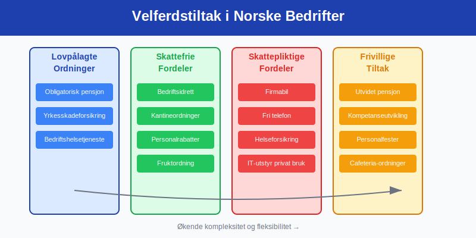
1.1 Definisjon og Lovgrunnlag
Velferdstiltak reguleres av flere lovverk og bestemmelser:
- Skatteloven: Definerer skattepliktige vs. skattefrie fordeler
- Arbeidsmiljøloven: Setter minimumsstandard for velferd på arbeidsplassen
- Tariffavtaler: Kan kreve spesifikke velferdstiltak
- Folketrygdloven: Regulerer lovpålagte trygdeordninger
1.2 Kategorisering av Velferdstiltak
Hovedkategorier av velferdstiltak:
| Kategori | Beskrivelse | Skattemessig behandling | Regnskapsføring |
|---|---|---|---|
| Lovpålagte ordninger | Obligatorisk tjenestepensjon, yrkesskadeforsikring | Fradragsberettiget | Lønnskostnad |
| Skattefrie fordeler | Bedriftsidrett, kantineordninger | Ikke skattepliktig for ansatt | Driftskostnad |
| Skattepliktige fordeler | Firmabil, fri telefon | Skattepliktig for ansatt | Lønnskostnad + naturalytelse |
| Frivillige ordninger | Utvidet helseforsikring, bonusordninger, Frivillig innskuddspensjon | Varierer | Avhenger av ordning |
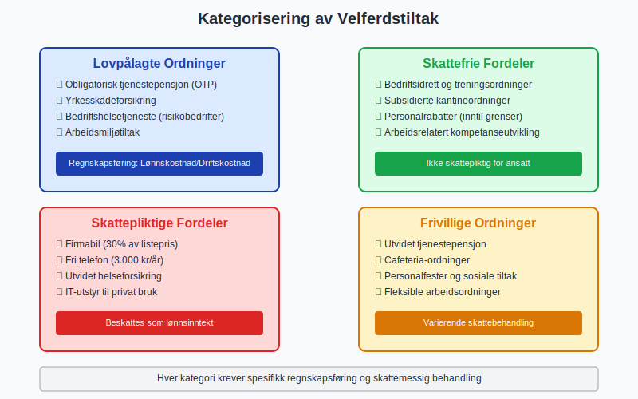
1.3 Strategiske Hensyn
Velferdstiltak som strategisk verktøy:
Rekrutteringsfordeler:
- Konkurransefortrinn: Attraktive pakker tiltrekker talenter
- Kompensasjon for lavere lønn: Velferdstiltak kan veie opp for lønnsgap
- Employer branding: Signaliserer arbeidsgiverens verdier
- Retensjon: Reduserer utskiftningskostnader
Kostnad-nytte analyse:
- Direkte kostnader: Premie, administrasjon, systemkostnader
- Indirekte gevinster: Redusert sykefravær, økt produktivitet
- Skatteeffektivitet: Optimalisering av skattebyrde
- Administrativ effektivitet: Sentraliserte innkjøp og avtaler
Seksjon 2: Lovpålagte Velferdstiltak
2.1 Obligatorisk Tjenestepensjon (OTP)
Obligatorisk tjenestepensjon er det mest omfattende lovpålagte velferdstiltaket:
Hovedkrav:
- Minimum innskudd: 2% av lønn mellom 1G og 7,1G
- Dekningsgrad: Alle ansatte med minst 20% stilling
- Opptjeningsperiode: Fra første arbeidsdag
- Administrasjon: Gjennom godkjent pensjonsinnretning
Regnskapsføring:
Månedlig periodisering:
Debet: Pensjonskostnad
Kredit: Skyldig pensjonspremie
Ved innbetaling:
Debet: Skyldig pensjonspremie
Kredit: Bank
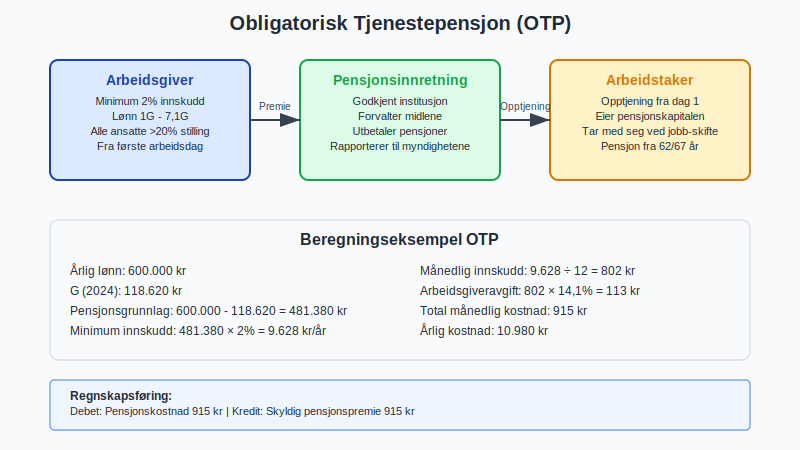
2.2 Yrkesskadeforsikring
Yrkesskadeforsikring dekker skader som oppstår i arbeidsforhold:
| Element | Krav | Dekning | Kostnad |
|---|---|---|---|
| Lovpålagt | Alle arbeidsgivere | Yrkesrelaterte skader | 0,5-2% av lønnssum |
| Frivillig utvidelse | Valgfritt | Fritidsskader, høyere erstatning | 1-3% av lønnssum |
| Behandlingsdekning | Standard | Medisinsk behandling | Inkludert i premie |
Regnskapsbehandling:
- Klassifisering: Sosiale kostnader/personalforsikring
- Periodisering: Månedlig avsetning basert på lønnssum
- MVA: Ikke fradragsberettiget (fritatt for MVA)
2.3 Bedriftshelsetjeneste
Bedriftshelsetjeneste er lovpålagt for virksomheter med særlige risikoer:
Krav og omfang:
- Risikovurdering: Avgjør om BHT er påkrevd
- Tjenester: Forebygging, rådgivning, helsekontroller
- Kompetansekrav: Autorisert helsepersonell
- Kostnader: 500-5000 kr per ansatt årlig
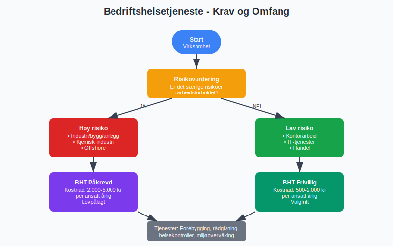
Seksjon 3: Skattefrie Velferdstiltak
3.1 Bedriftsidrett og Treningsordninger
Bedriftsidrett er et populært skattefritt velferdstiltak:
Skattefrie ytelser:
- Bedriftstreningssentre: Egne eller eksterne treningsanlegg
- Organisert trening: Gruppetrening, instruktørledede økter
- Idrettsutstyr: Grunnleggende treningsutstyr
- Maksimumsverdier: Rimelighetsvurdering uten fast grense
Regnskapsføring:
Månedlige kostnader:
Debet: Velferdskostnader
Kredit: Leverandørgjeld/Bank
Årlig avskrivning utstyr:
Debet: Avskrivning treningsutstyr
Kredit: Akkumulerte avskrivninger
3.2 Kantineordninger
Subsidierte kantiner kan være skattefrie under visse betingelser:
| Type ordning | Skattefrihet | Vilkår | Regnskapsføring |
|---|---|---|---|
| Gratis kaffe/te | Ja | Alminnelig tilgjengelig | Driftskostnad |
| Subsidiert kantine | Ja | Maksimalt 50% rabatt | Driftskostnad minus inntekt |
| Gratis lunsj | Nei | Skattepliktig fordel | Lønnskostnad |
| Fruktordning | Ja | Begrenset verdi | Driftskostnad |
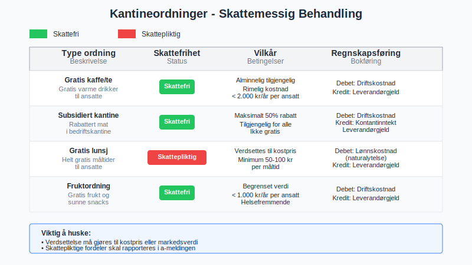
3.3 Personalrabatter
Personalrabatter på bedriftens produkter eller tjenester:
Skattefrie grenser:
- Egne produkter: Inntil 8.000 kr årlig per ansatt
- Tjenester: Inntil rimelig markedsverdi
- Tredjepartsprodukter: Må vurderes individuelt
- Dokumentasjon: Krav til verdsettelse og registrering
Administrative rutiner:
- Registreringssystem: Sporing av personlige rabatter
- Rapportering: Årlig oversikt til skattemyndighetene
- Internkontroll: Sikre at grenser ikke overskrides
Seksjon 4: Skattepliktige Velferdstiltak
4.1 Firmabil og Transportfordeler
Firmabil er det mest omfattende skattepliktige velferdstiltaket:
Beregning av fordelsverdi:
Beregningsformel:
Listepris × 30% × (1 - [Egenandel/Listepris])
Minimum: Listepris × 10%
Eksempel:
Listepris bil: 600.000 kr
Egenandel: 60.000 kr (10%)
Fordelsverdi: 600.000 × 30% × (1-0,1) = 162.000 kr årlig
Regnskapsføring firmabil:
Anskaffelse:
Debet: Firmabil (varige driftsmidler)
Kredit: Leverandørgjeld
Månedlig avskrivning:
Debet: Avskrivning firmabil
Kredit: Akkumulerte avskrivninger
Naturalytelse til ansatt:
Debet: Lønnskostnad (fordelsverdi)
Kredit: Skyldig lønn
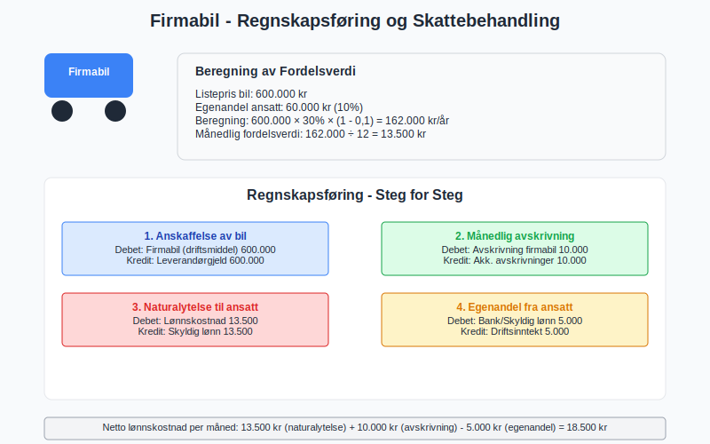
4.2 Teknologifordeler
IT-utstyr og kommunikasjonsfordeler:
| Fordel | Skattepliktig verdi | Typisk kostnad | Regnskapsklassifisering |
|---|---|---|---|
| Mobiltelefon | Fri bruk: 3.000 kr/år | 500-1.500 kr/mnd | Driftskostnad + lønnskostnad |
| Hjemmekontor PC | Privat bruk: 20-30% av kostnad | 10.000-30.000 kr | Varige driftsmidler |
| Internettforbindelse | Privat bruk: 2.000-4.000 kr/år | 500-800 kr/mnd | Driftskostnad |
| Programvare | Privat lisens: Markedsverdi | Varierer | Driftskostnad + lønnskostnad |
4.3 Helseforsikring og Behandling
Utvidet helseforsikring utover lovpålagte ordninger:
Skattepliktige elementer:
- Behandlingsforsikring: Full verdi er skattepliktig
- Familiedekning: Verdi for familiemedlemmer
- Alternativ behandling: Kiropraktor, fysioterapi utover offentlig dekning
- Tannbehandling: Utover akutt behandling
Regnskapsføring:
Premieinnbetaling:
Debet: Helseforsikringskostnad
Kredit: Bank
Fordelsverdi til ansatt:
Debet: Lønnskostnad (naturalytelse)
Kredit: Skyldig lønn
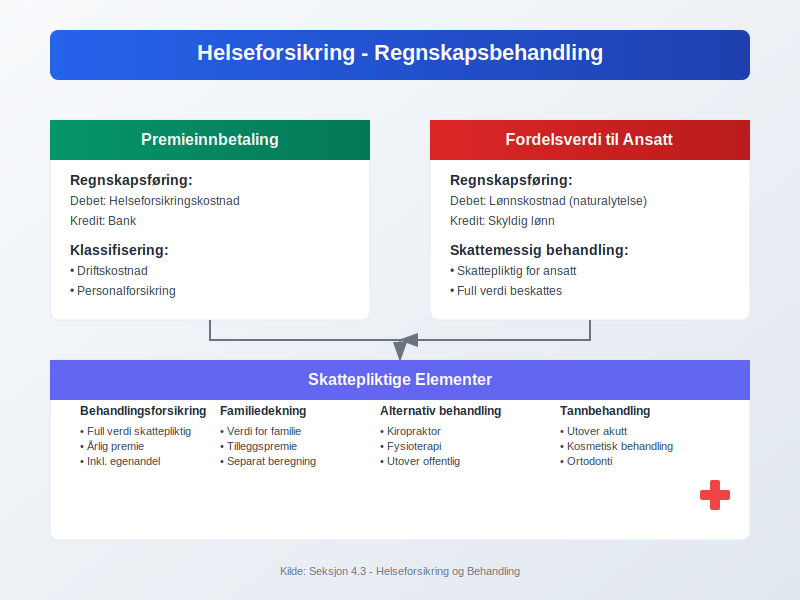
Seksjon 5: Pensjonsordninger og Langsiktige Fordeler
5.1 Utvidet Tjenestepensjon
Tjenestepensjon utover obligatorisk minimum:
Innskuddsbaserte ordninger:
- Økt innskuddssats: Fra 2% til 5-15% av lønn
- Utvidet lønnsgrunnlag: Inkludere lønn over 7,1G
- Fleksible innskudd: Varierende innskudd basert på alder/posisjon
- Investeringsvalg: Ansattes valgmuligheter
Ytelsesbaserte ordninger:
- Sluttlønnsordninger: Pensjon basert på sluttlønn
- Karrierelønnordninger: Pensjon basert på gjennomsnittslønn
- Hybrid-ordninger: Kombinasjon av innskudd og ytelse
Regnskapsføring innskuddsordning:
Månedlig kostnad:
Debet: Pensjonskostnad
Kredit: Skyldig pensjonspremie
Arbeidsgiveravgift:
Debet: Arbeidsgiveravgift
Kredit: Skyldig arbeidsgiveravgift
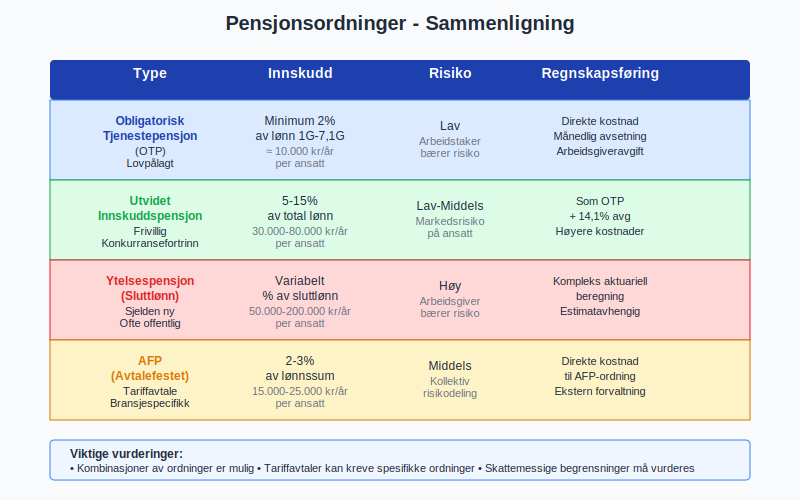
5.2 AFP og Særlige Pensjonsordninger
Avtalefestet pensjon (AFP) og andre særordninger:
| Ordning | Hovedkjennetegn | Kostnadsnivå | Regnskapsbehandling |
|---|---|---|---|
| AFP (privat) | Tidligpensjon fra 62 år | 2-3% av lønnssum | Kompleks aktuariell beregning |
| AFP (offentlig) | Livsvarig tillegg til alderspensjon | 2% av lønnssum | Direkte kostnad |
| Topplønnspensjon | Pensjon for lønn over 7,1G | 1-5% av høy lønn | Egne pensjonsavtaler |
5.3 Livsforsikring og Uførependel
Personforsikringer knyttet til pensjonsordninger:
Livsforsikring:
- Gruppelivsforsikring: 4-10 ganger årlig lønn
- Kostnad: 1-3 promille av forsikringssum
- Skattebehandling: Premie fradragsberettiget, utbetaling skattepliktig
Uførepensjon:
- Dekning: 60-70% av lønn ved uførhet
- Karenstid: 3-12 måneder etter sykepenger
- Integrasjon: Koordinert med offentlig uføretrygd
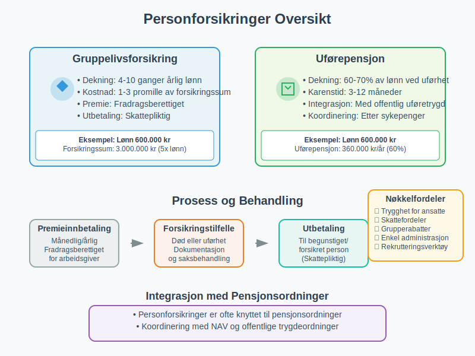
Seksjon 6: Fleksible Fordelsordninger (Cafeteria-ordninger)
6.1 Konsept og Struktur
Cafeteria-ordninger gir ansatte valgfrihet i fordelssammensetning:
Grunnprinsipper:
- Fordelspott: Fast beløp per ansatt til fordeling
- Valgmeny: Forhåndsdefinerte alternativer
- Fleksibilitet: Individuelle prioriteringer
- Administrativ løsning: Digital platform for valg og administrasjon
Typiske valgmuligheter:
Fordelspott: 50.000 kr årlig
Valgalternativer:
- Ekstra ferieuker: 15.000 kr/uke
- Utvidet helseforsikring: 25.000 kr
- Ekstra pensjonsinnskudd: 1:1 matching
- Kontantutbetaling: Skattepliktig lønn
- Kursvirksomhet: 30.000 kr
6.2 Skattemessige Vurderinger
Kompleks skattebehandling i cafeteria-ordninger:
| Fordeltype | Skattebehandling | Arbeidsgiverens fradrag | Administrasjon |
|---|---|---|---|
| Skattefrie fordeler | Ikke skattepliktig for ansatt | Fullt fradragsberettiget | Enkel |
| Skattepliktige fordeler | Beskattes som lønn | Fullt fradragsberettiget | Kompleks verdsettelse |
| Kontantutbetaling | Skattepliktig lønn | Lønnskostnadsfradrag | Standard lønn |
| Pensjonsinnskudd | Ikke skattepliktig | Fradragsberettiget | Pensjonsadministrasjon |
6.3 Implementering og Administrasjon
Praktisk gjennomføring av cafeteria-ordninger:
Systemkrav:
- Digital platform: For ansattes valg og endringer
- Lønnssystemintegrasjon: Automatisk behandling av valg
- Regnskapsintegrasjon: Korrekt bokføring av forskjellige fordeler
- Rapportering: Skattemessig rapportering til myndighetene
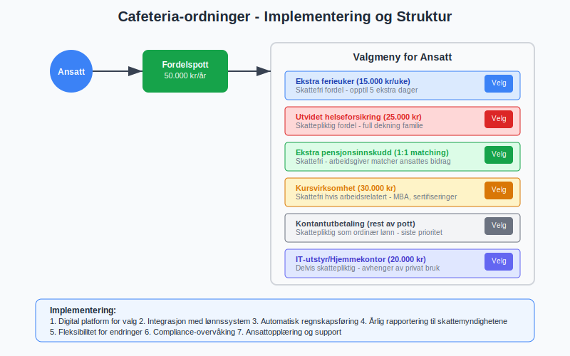
Seksjon 7: Kompetanseutvikling og Kursvirksomhet
7.1 Arbeidsrelatert Kompetanseutvikling
Kurs og utdanning finansiert av arbeidsgiver:
Skattefrie kategorier:
- Arbeidsrelaterte kurs: Direkte knyttet til arbeidsoppgaver
- Sikkerhetsopplæring: HMS og obligatorisk opplæring
- IT-opplæring: Systemer brukt i arbeidsforhold
- Språkkurs: Nødvendig for arbeidsutførelse
Skattepliktige kategorier:
- Generell utdanning: Ikke arbeidsrelatert
- Personlig utvikling: Livsstilskurs, coaching
- Fritidsinteresser: Hobbykurs og fritidsaktiviteter
7.2 Regnskapsføring av Kompetanseutvikling
Bokføring av utdanningskostnader:
Arbeidsrelaterte kurs:
Debet: Kompetanseutvikling/Kursvirksomhet
Kredit: Leverandørgjeld/Bank
Ikke-arbeidsrelaterte kurs:
Debet: Lønnskostnad (naturalytelse)
Kredit: Leverandørgjeld/Bank
MVA-behandling:
- Innenlandske kurs: 25% MVA, fradragsberettiget
- Utenlandske kurs: Ingen MVA
7.3 Langsiktige Utdanningsavtaler
Studietillatelse og utdanningsstøtte:
| Type avtale | Skattebehandling | Tilbakebetalingsplikt | Regnskapsføring |
|---|---|---|---|
| Mastergrad (arbeidsrelatert) | Skattefri | Ofte 2-5 år binding | Driftskostnad |
| Doktorgrad | Skattefri hvis forskning | Akademisk binding | Investering/kostnad |
| MBA | Delvis skattepliktig | Kommersiell binding | Blandet behandling |
| Språkutdanning | Avhenger av relevans | Kort binding | Driftskostnad |
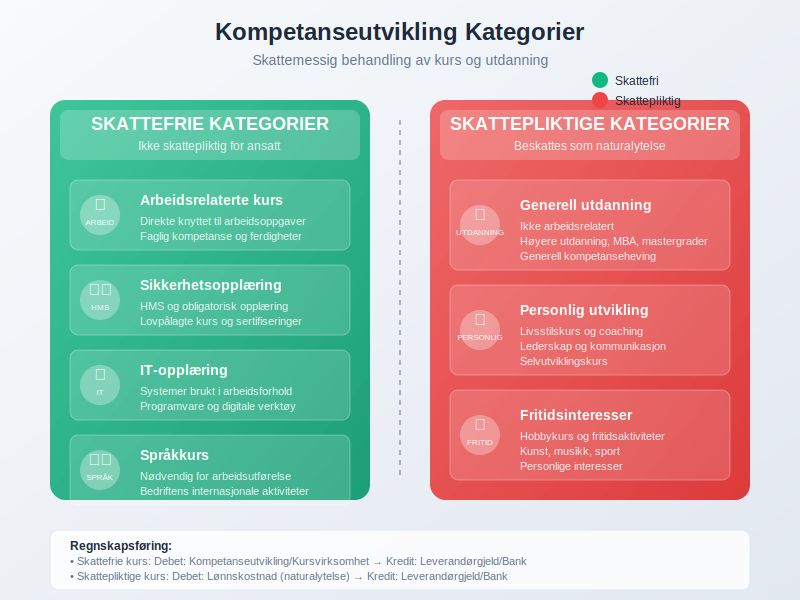
Seksjon 8: Trivsel og Sosiale Arrangements
8.1 Personalfester og Sosiale Aktiviteter
Arrangement for ansatte og deres trivsel:
Skattefrie arrangementer:
- Julefest: Rimelig kostnad per person (ca. 2.000 kr)
- Sommerfest: Tilsvarende julefestgrense
- Avdelingsfester: Mindre arrangementer
- Teambuilding: Arbeidsrelaterte aktiviteter
Skattepliktige arrangementer:
- Familiearrangementer: Inkludere familie øker skatteplikt
- Luksuriøse arrangementer: Over rimelighetsnormen
- Reisearrangementer: Ferie/reise-lignende aktiviteter
- Gaveutdeling: Personlige gaver til ansatte
8.2 Bedriftshytter og Rekreasjonsanlegg
Ferieboliger og rekreasjonsordninger:
Skattefri bruk:
- Arbeidsrelatert bruk: Seminarer, bedriftsarrangementer
- Korttidsutlån: Enkelte helger uten betaling
- Familiesammenkomster: Bedriftsrelaterte family days
Skattepliktig bruk:
- Privat ferieutleie: Betalt bruk under markedsverdi
- Langvarig utlån: Utstrakt privat bruk
- Eksklusiv tilgang: Kun for utvalgte ansatte
8.3 Regnskapsføring av Sosiale Kostnader
Bokføring av trivselstiltak:
Personalfest (skattefri):
Debet: Sosiale kostnader/Personalfest
Kredit: Leverandørgjeld/Bank
Gaver til ansatte (skattepliktig):
Debet: Lønnskostnad (naturalytelse)
Kredit: Leverandørgjeld/Bank
Drift av bedriftshytte:
Debet: Driftskostnader eiendom
Kredit: Diverse kostnader (vedlikehold, forsikring, etc.)
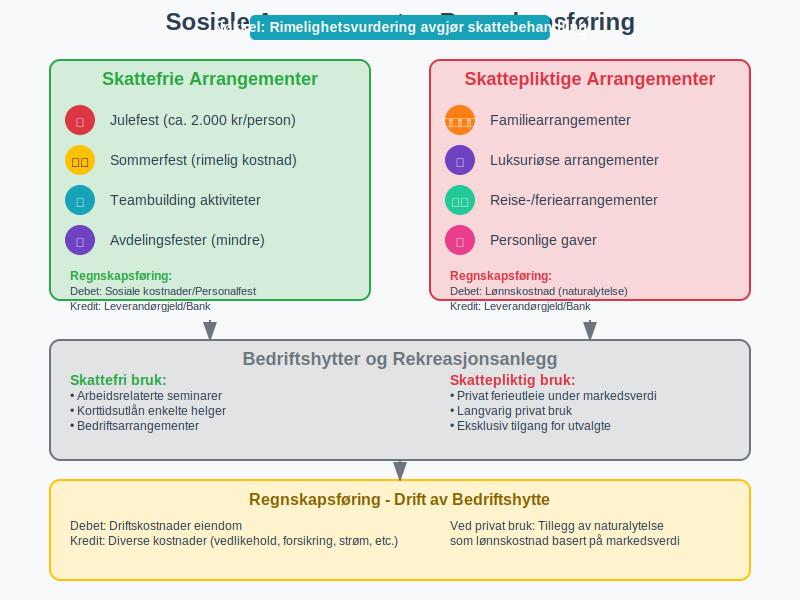
Seksjon 9: Digitalisering og Fremtidige Trender
9.1 Teknologiske Løsninger
Digitale verktøy for administrasjon av velferdstiltak:
HR-systemer og integrasjon:
- Selvbetjeningsportaler: Ansatte administrerer egne fordeler
- Automatisk regnskapsføring: Direkte integrasjon med økonomisystemer
- Compliance-overvåking: Automatisk sjekk av skattemessige grenser
- Rapporteringsautomatisering: A-ordningen og årsrapportering
Mobile løsninger:
- App-baserte valg: Enkel administrasjon av cafeteria-ordninger
- Digitale legitimasjoner: Medlemskap i treningssentre, forsikringskort
- Real-time tracking: Oversikt over forbruk av fordeler
- Push-notifikasjoner: Påminnelser om frister og muligheter
9.2 Kunstig Intelligens og Personalisering
AI-drevne verktøy for optimalisering:
Personaliserte anbefalinger:
- Data-drevne forslag: Basert på ansattes bruksmønstre
- Prediktiv analyse: Forutsi hvilke fordeler som verdsettes
- Optimalisering: Maksimer verdi innenfor budsjett
- Segmentering: Tilpassede pakker for ulike ansattgrupper
Automatisert compliance:
- Skatteoptimalisering: AI foreslår skatteeffektive sammensetninger
- Risikovurdering: Identifiser potensielle compliance-problemer
- Dokumentasjonsautomatisering: Generere nødvendig dokumentasjon
- Regelverksoppdateringer: Automatisk tilpasning til nye regler
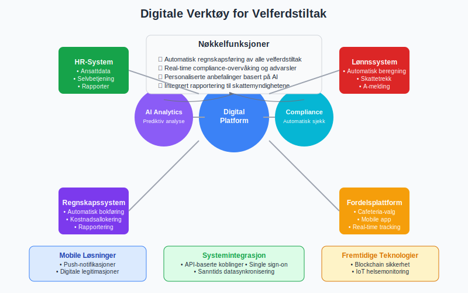
9.3 Fremtidige Utviklingstrekk
Trender som påvirker velferdstiltak:
Demografiske endringer:
- Flergenerasjons-arbeidsplasser: Ulike behov og preferanser
- Økt forventet levetid: Fokus på langsiktige pensjonsordninger
- Endrede familiestrukturer: Tilpassede fordeler for moderne familier
- Geografisk spredning: Fordeler for fjernarbeidere
Samfunnsmessige trender:
- Bærekraftsfokus: Miljøvennlige fordeler og initiativer
- Mental helse: Økt fokus på psykisk velvære
- Work-life balance: Fleksibilitet som velferdstiltak
- Individualisering: Mer personaliserte pakker
Seksjon 10: Internasjonale Perspektiver
10.1 Sammenligning med Andre Land
Velferdstiltak i internasjonalt perspektiv:
| Land | Typiske fordeler | Skattebehandling | Arbeidsgiveransvar |
|---|---|---|---|
| USA | Helseforsikring, 401k | Kompleks, mange skattefrie | Høyt (helseforsikring) |
| Tyskland | Bedriftspensjon, firmabil | Sosialavgifter påløper | Moderat |
| UK | Private healthcare, pension | Benefit-in-kind skatt | Lavt |
| Danmark | Firmabil, feriehus | Høy beskatning | Moderat |
10.2 Utsendte Arbeidstakere
Spesielle hensyn for internasjonale ansatte:
Utlendinger i Norge:
- Begrenset skatteplikt: Særregler for utsendte
- Boligtillegg: Ofte nødvendig og skattefritt
- Hjemreiser: Arbeidsrelaterte vs. private reiser
- Forsikringsdekning: Internasjonal helse- og reiseforsikring
Nordmenn i utlandet:
- Norske pensjonsordninger: Videreføring under utstasjonering
- Sosiale kostnader: Koordinering med lokale ordninger
- Hjemreiser: Skattemessig behandling
- Valutarisiko: Sikring av fordeler i norske kroner
10.3 Grenseoverskridende Utfordringer
Kompleksitet i internasjonale velferdstiltak:
Juridiske utfordringer:
- Dobbeltbeskatning: Avtaler mellom land
- Sosialtrygdkoordinering: EU/EØS-regelverk
- Rapporteringsplikt: Flere jurisdiksjoner
- Compliance: Forskjellige lovkrav
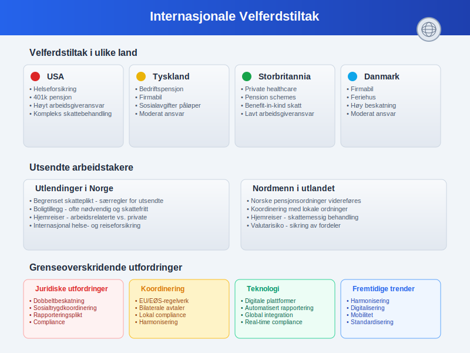
Seksjon 11: Måling og Evaluering av Velferdstiltak
11.1 Nøkkelindikatorer (KPIer)
Måling av effektivitet i velferdsprogrammer:
Økonomiske indikatorer:
- Kostnad per ansatt: Totale velferdskostnader/antall ansatte
- ROI på velferdstiltak: Produktivitetsgevinst vs. kostnad
- Skatteeffektivitet: Skattebesparelse vs. direktekostnad
- Benchmark mot bransje: Sammenligning med konkurrenter
HR-relaterte indikatorer:
- Ansattilfredshet: Målt gjennom regelmessige undersøkelser
- Turnover-rate: Effekt på ansattretensjon
- Rekrutteringseffektivitet: Tid til besetting og kvalitet på søkere
- Sykefravær: Påvirkning på helse og velvære
Bruksstatistikk:
- Utnyttelsesgrad: Hvor mange som bruker ulike fordeler
- Fordelspreferanser: Populære vs. upopulære ordninger
- Demografiske mønstre: Aldersbaserte og generasjonsmessige forskjeller
- Sesongvariasjoner: Tidsbaserte bruksmønstre
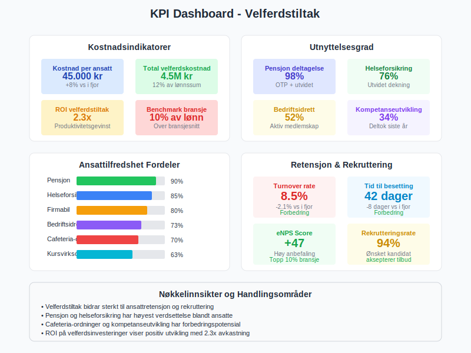
11.2 Ansattes Evaluering og Feedback
Systematisk innhenting av ansattes tilbakemeldinger:
Evalueringsmetoder:
- Årlige fordelsundersøkelser: Omfattende gjennomgang av alle ordninger
- Kontinuerlige pulse-surveys: Korte, hyppige målinger
- Focus groups: Dybdeinnsikt fra representerte grupper
- Exit-intervjuer: Avgang som læringsmulighet
Viktige spørsmålsområder:
Verdsettelse:
- Hvilke fordeler verdsetter du mest?
- Hva savner du i dagens pakke?
- Hvordan påvirker fordelene din arbeidsglede?
Bruk og tilgjengelighet:
- Hvor ofte bruker du de ulike fordelene?
- Er informasjonen om fordeler lett tilgjengelig?
- Opplever du administrative hindringer?
Fremtidige behov:
- Hvordan har dine behov endret seg?
- Hvilke nye fordeler ville du prioritert?
- Hvordan bør vi tilpasse oss fremtidige behov?
11.3 Benchmarking og Markedsanalyse
Sammenligning med arbeidsmarkedet:
Benchmarking-kilder:
- Bransjeundersøkelser: KS, NHO, fagforbund
- Konsulentrapporter: Willis Towers Watson, Mercer
- Offentlige statistikker: SSB, NAV
- Peer-to-peer utveksling: Direkte samarbeid med andre bedrifter
| Benchmark-område | Sammenligning | Handlingsområde |
|---|---|---|
| Totalkostnad | Velferdskostnad som % av lønn | Budsjettoptimalisering |
| Fordelsmiks | Andel av ulike fordelstyper | Porteføljebalansering |
| Innovasjon | Nye og fremvoksende fordeler | Konkurransefortrinn |
| Administrativ effektivitet | Kostnader og digitalisering | Prosessforbedring |
Seksjon 12: Juridiske og Compliance-aspekter
12.1 Skattemessige Fallgruver
Vanlige feil og deres konsekvenser:
Typiske feilkilder:
- Feilklassifisering: Skattepliktige fordeler behandlet som skattefrie
- Verdsettelse: Feil beregning av fordelsverdi
- Periodisering: Feil timing av skattemessig behandling
- Rapportering: Manglende eller feil rapportering til myndighetene
Konsekvenser:
- Etterbetaling: Skatt og renter for arbeidstaker
- Sanksjoner: Bøter for arbeidsgiver
- Revisjonsrisiko: Økt oppmerksomhet fra skattemyndighetene
- Omdømmerisiko: Negative medieoppslag
12.2 Arbeidsrettslige Aspekter
Juridiske forpliktelser knyttet til velferdstiltak:
Likestilling og diskriminering:
- Likebehandling: Fordeler må tilbys på lik basis
- Indirekte diskriminering: Fordeler som favoriserer visse grupper
- Tilpasningsplikt: Særlige behov og funksjonsnedsettelser
- Dokumentasjon: Begrunnelse for eventuelle forskjeller
Tariffavtaler og forhandlinger:
- Forhandlingsplikt: Visse fordeler må forhandles med tillitsvalgte
- Implementering: Prosedyrer for innføring av nye ordninger
- Endringer: Prosess for modifikasjon av eksisterende fordeler
- Oppsigelse: Vilkår for fjerning av fordeler
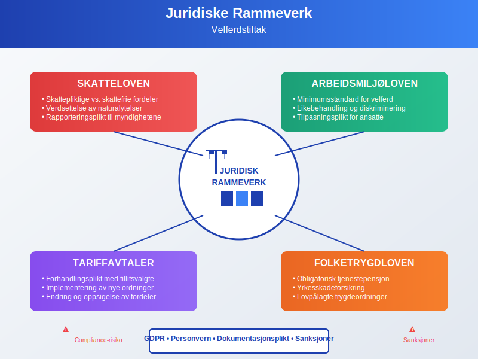
12.3 GDPR og Personvern
Personvernhensyn i administrasjon av velferdstiltak:
Databehandling:
- Behandlingsgrunnlag: Samtykke eller berettiget interesse
- Datatyper: Helseopplysninger, familieforhold, preferanser
- Oppbevaringstid: Sletting etter opphør av arbeidsforhold
- Tredjepartstilgang: Forsikringsselskaper, pensjonsinnretninger
Sikkerhetstiltak:
- Tekniske sikkerhetstiltak: Kryptering, tilgangskontroll
- Organisatoriske tiltak: Opplæring, rutiner, kontroller
- Dataoverføring: Sikker overføring til samarbeidspartnere
- Brudd-håndtering: Prosedyrer ved datainnbrudd
Seksjon 13: Implementering og Endringsledelse
13.1 Planlegging av Nye Velferdstiltak
Systematisk tilnærming til innføring av nye fordeler:
Analysefase:
- Behovsanalyse: Kartlegg ansattes ønsker og behov
- Kostnadsanalyse: Beregn direkte og indirekte kostnader
- Juridisk vurdering: Sikre compliance og korrekt behandling
- Leverandørevaluering: Velg riktige samarbeidspartnere
Implementeringsfase:
- Pilottest: Test med utvalgte grupper
- Systemintegrasjon: Koble til eksisterende HR/økonomi-systemer
- Kommunikasjon: Informere alle ansatte om nye muligheter
- Opplæring: Skoler HR og ansatte i bruk av nye ordninger
Oppfølgingsfase:
- Monitering: Følg bruk og tilfredshet
- Justering: Tilpass basert på erfaringer
- Evaluering: Vurder effekt mot målsettinger
- Skalering: Utvid eller modifiser ordningen
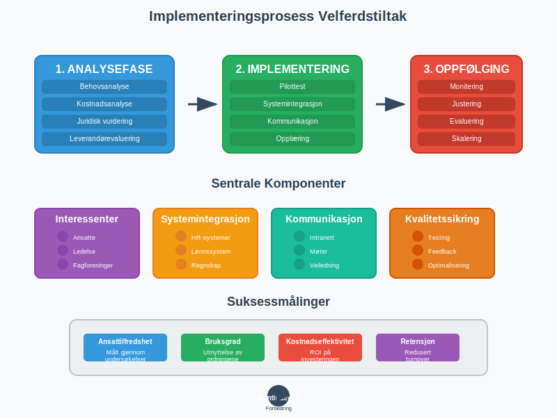
13.2 Kommunikasjon og Involvering
Effektiv kommunikasjon om velferdstiltak:
Kommunikasjonskanaler:
- Intranett og digitale plattformer: Sentral informasjonsbank
- Ansattemøter: Direkte dialog og spørsmål
- E-post og nyhetsbrev: Regelmessige oppdateringer
- Individuell rådgivning: Personlig veiledning ved behov
Meldings-strategi:
Før innføring:
- Bakgrunn og begrunnelse for nye tiltak
- Forventede fordeler for ansatte og organisasjon
- Tidsplan for implementering
- Kontaktinformasjon for spørsmål
Under implementering:
- Praktisk informasjon om bruk
- Teknisk support og hjelpemidler
- Status på utrulling
- Foreløpige erfaringer
Etter implementering:
- Bruksstatistikk og tilbakemeldinger
- Eventuelle justeringer
- Suksesshistorier
- Planer for videreutvikling
13.3 Endringsledelse og Kulturutvikling
Kulturell integrasjon av velferdstiltak:
Endringsledelse:
- Visjon og strategi: Koble velferdstiltak til organisasjonens verdier
- Lederforankring: Sikre støtte fra alle ledernivåer
- Change agents: Identifiser ambassadører i organisasjonen
- Motstanshåndtering: Adresser skepsis og bekymringer proaktivt
Kulturutvikling:
- Verdiintegrasjon: La velferdstiltak reflektere bedriftens verdier
- Atferdsendring: Oppmuntre til bruk av helsefremmende tiltak
- Samfunnsansvar: Koble velferdstiltak til bærekraftsmål
- Kontinuerlig forbedring: Etabler kultur for tilbakemelding og utvikling
Seksjon 14: Fremtidige Utfordringer og Muligheter
14.1 Demografiske Endringer
Påvirkning av samfunnsmessige trender:
Aldrende arbeidsstyrke:
- Utfordringer: Økte helsekostnader, behov for fleksibilitet
- Muligheter: Erfaring og kompetanse, mentorordninger
- Tilpasninger: Seniortiltak, gradvis avtrapping
- Innovasjon: Ny teknologi for helse og velvære
Flergenerasjonsarbeidsplasser:
- Generasjon Z (f. 1997-2012): Digital natives, verdidrevne
- Millennials (f. 1981-1996): Work-life balance, fleksibilitet
- Generasjon X (f. 1965-1980): Karrierefokus, sikkerhet
- Baby boomers (f. 1946-1964): Pensjon, helse
14.2 Teknologiske Muligheter
Nye teknologier som transformerer velferdstiltak:
Kunstig intelligens:
- Personalisering: AI-drevne anbefalinger for fordeler
- Prediksjonsmodeller: Forutsi ansattes behov og ønsker
- Automatisering: Reduser administrativt arbeid
- Dataanalyse: Identifiser mønstre og trender
Blockchain:
- Sikkerhet: Manipulasjonssikre registre
- Interoperabilitet: Samhandling mellom systemer
- Smart contracts: Automatisere utbetalinger og vilkår
- Transparens: Innsyn i fordeler og rettigheter
Internet of Things (IoT):
- Helsemonitoring: Wearables for fitness og helse
- Smart workplaces: Sensorer for miljø og trivsel
- Automatisering: Intelligente bygninger og fasiliteter
- Data-drevet innsikt: Real-time informasjon om bruk
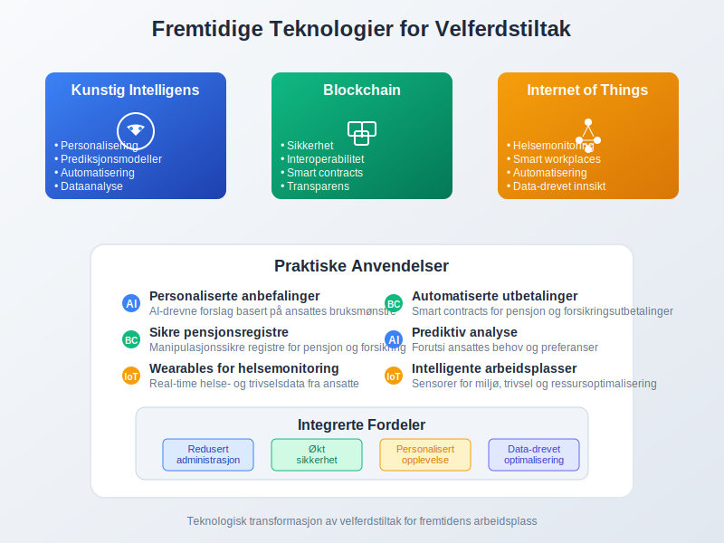
14.3 Bærekraft og Samfunnsansvar
Integrasjon av bærekraftsprinsipper:
Miljømessig bærekraft:
- Grønne fordeler: Sykkel-til-jobb, offentlig transport
- Energieffektivitet: Miljøvennlige firmabiler
- Sirkulær økonomi: Gjenbruk og deling av ressurser
- Karbonnøytralitet: Kompensasjon for utslipp
Sosial bærekraft:
- Inkludering: Tilgjengelige fordeler for alle
- Likestilling: Kjønns- og aldersbalanserte tiltak
- Mental helse: Fokus på psykisk velvære
- Samfunnsengasjement: Frivillig arbeid som velferdstiltak
Økonomisk bærekraft:
- Kostnadseffektivitet: Optimalisering uten kvalitetsreduksjon
- Langsiktighet: Bærekraftige finansieringsmodeller
- Verdibaserte innkjøp: Etiske leverandører og partnere
- Transparens: Åpen rapportering om velferdsinvesteringer
Konklusjon
Velferdstiltak har utviklet seg fra enkle personalfordeler til strategiske verktøy for talentakquisjon, retensjon og organisasjonsutvikling. I dagens komplekse arbeidsmarked representerer velferdstiltak en kritisk komponent i totalmedarbeideropplevelsen som påvirker alle aspekter av personaladministrasjon og økonomistyring.
Strategiske implikasjoner:
- Konkurransedifferensiering: Godt utformede velferdspakker gir betydelige rekrutteringsfordeler
- Kostnadsoptimalisering: Skatteeffektive ordninger maksimerer verdi for både arbeidsgiver og ansatt
- Kulturell verdiskaping: Velferdstiltak signaliserer organisasjonens verdier og prioriteringer
- Fremtidsposisjonering: Fleksible og tilpasningsdyktige ordninger sikrer relevans over tid
Operasjonelle suksessfaktorer:
For regnskapsførere, HR-ledere og finansdirektører er effektiv håndtering av velferdstiltak avhengig av:
- Juridisk compliance: Korrekt skattemessig behandling og arbeidsrettslig overholdelse
- Systemintegrasjon: Sømløs kobling mellom HR-, lønn- og regnskapssystemer
- Datadreven beslutningsstøtte: Bruk av analytics for kontinuerlig optimalisering
- Endringsledelse: Proaktiv tilpasning til nye behov og markedstrender
Fremtidsrettet perspektiv:
Velferdstiltak vil fortsette å evolve med teknologiske fremskritt, demografiske endringer og samfunnsmessige forventninger. Organisasjoner som adopterer digitale løsninger, prioriterer bærekraft og fokuserer på personalisering vil skape konkurransefortrinn i kampen om talent.
Teknologisk transformasjon gjennom AI, blockchain og IoT vil revolusjonere både administrasjon og leveranse av velferdstiltak, mens samfunnsmessige trender som miljøbevissthet, mental helse og work-life balance vil forme innholdet i fremtidens velferdspakker.
Praktisk anvendelse:
Den vellykkede implementeringen av velferdstiltak krever balansering av ansattes behov, organisasjonens mål og regulatoriske krav. Gjennom systematisk planlegging, kontinuerlig evaluering og strategisk tilpasning kan velferdstiltak transformeres fra kostnadspost til verdiskaper som bidrar til både ansattes trivsel og organisasjonens lønnsomhet.
Suksess måles ikke bare i kostnadseffektivitet, men i evnen til å skape en attraktiv, støttende og produktiv arbeidsplass som tiltrekker, utvikler og beholder de beste talentene i en stadig mer konkurrerende global økonomi.